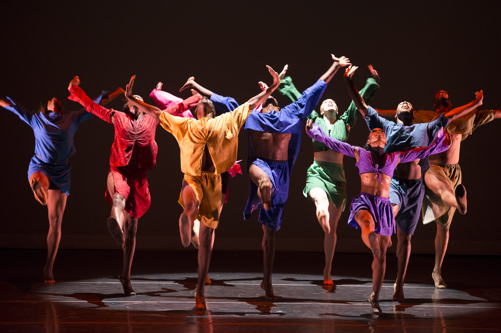
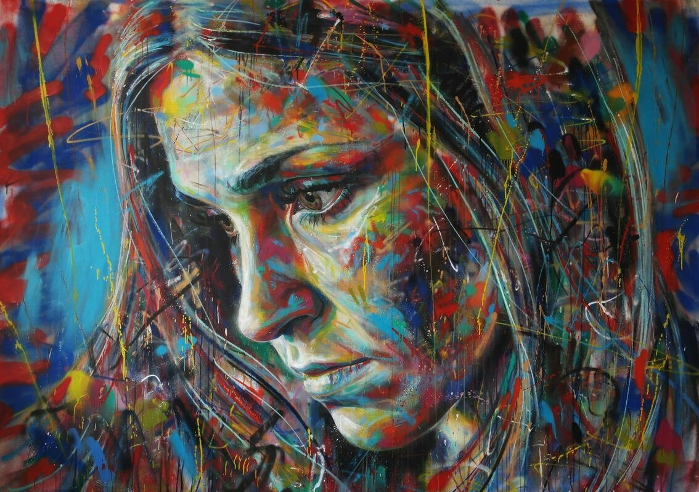

Кітап
Кітап менің ең үлкен бір хоббиім. Кітап оқыған маған өзіндік рахат береді.Есейген сайын кітап оқуға құмарлығым артуда. Қазіргі кезде мен "Психология" кітабын оқу үстіндемін. Бұдан алдын "Абай жолы І том", "Маленький принц", "Алхимик", "Поле смерти" кітаптарын оқыған болатынмын.

Би
Би мен үшін ең басты қозғалыс. Өзімді өнер бағыттында дамытқан ұнайды. Күнделікті көп қозғалмау себебеінен би билеуді үйреніп жүрмін. Қазіргі кезде сабақ оқып, ноутбукта көп уақытымды өткіземін. Сол себепті билеу арқылы, түрлі қозғалыс жасау себебінен денемді шынықтырамын. Және бұл көңіл күйімді көтеруге көмектеседі.
